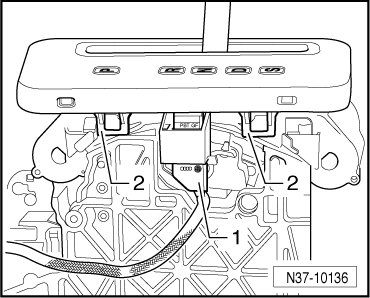
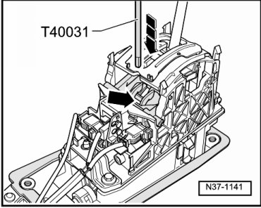
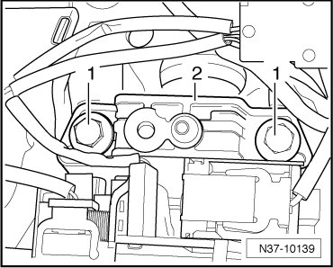
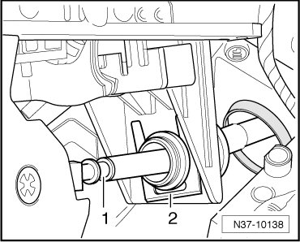

Selector Mechanism
Selector Mechanism
Special tools, testers and auxiliary items required
• Torque wrench (VAG 1331)
• Socket and key (T40031)
Removing
- Remove selector lever handle. Refer to --> [ Selector Lever Handle ] Selector Lever Handle.
- Pull the pull-rod up and shift the selector lever to the " S" position.
- The procedure for disconnecting the battery must absolutely be obeyed.
- Disconnect battery ground (GND) cable with ignition switched off.
- Remove the center console.
- Remove the noise insulation from the center console.
- Release connector - 1 - and disconnect.

- Remove bolt - 2 - and remove retainer.
- Pull connector - 3 - out from the retainer.
- Pull off connector - 1 -.

- Carefully pull off the retaining clips - 2 - on the left and right from the frame.
- Pull the retaining clips - arrows - outward on left and right and remove the frame upward.

- Remove the clamping bolt at the selector lever cable using the socket and key (T40031).

- Remove the bolts - 1 - and remove the front retainer - 2 - for the shift mechanism.

- Remove rear retainer for the shift mechanism.
- Pull the shift mechanism with selector lever cable slightly rearward.
- Remove lock washer - 2 - from the selector lever cable - 1 - and pull shift mechanism off from the selector lever cable.

Installing
Installation is performed in the reverse order of removal. Pay attention to the following:
- Attach selector lever cable - 1 - and fasten using a new lock washer - 2 -.
- Fasten the front and rear retainers for the shift mechanism --> [ (Item 12) Bolt, 20 Nm ] Selector Mechanism Assembly Overview.
- Route the wiring harnesses - 1 - to - 3 - as shown in the illustration.

1 Wiring harness to the shift lock solenoid (N110)
2 Wiring harness to the selector lever park position solenoid (N380)
3 Wiring harness to the Tiptronic switch (F189)
- Press connector - 3 - into the retainer.
- Fasten bolt - 2 -.
- Connect connector - 1 -.
- Adjust selector lever cable. Refer to --> [ Selector Lever Cable Checking and Adjusting ] Procedures.
- Install the center console.
- Connect battery..
- Install selector lever handle. Refer to --> [ Selector Lever Handle ] Selector Lever Handle.